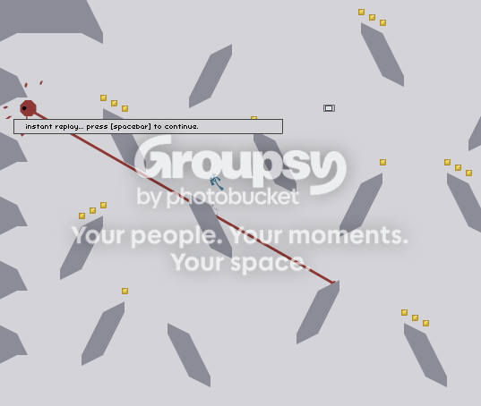

I have a little question about the editor. How do you actually play your own levels. Do you just have to keep clicking like I've been doing, or is there a way to actually play it?

I've heard of lasers shooting through little pieces of floor before, but this is a rather large piece.
1. Reflection tiles (like regular ones, but they reflect laser beams and gauss)
2. Drones that don't kill you (maybe slow you down or freeze you for a while or touch them to unlock something)
3. Customizable head that comes with unlocking a color (so you could maybe have a happy face as a head)
2. Drones that don't kill you (maybe slow you down or freeze you for a while or touch them to unlock something)
3. Customizable head that comes with unlocking a color (so you could maybe have a happy face as a head)
4606 kills/deaths
 all our deaths are within like 50-75 of each other except self kills
all our deaths are within like 50-75 of each other except self killsalso, your username without the x is my name
self - 572
mines 1216
floorbot - 283
gauss - 411
rocket - 356
chaingun - 105
lazor - 243
zap drone - 997
thwump - 233
total - 4416
Well, after we had tried to get all the gold on all the levels, one of my friends gave me a good idea. Try to get no gold at all and beat the episode. That's a lot harder on a lot of episodes and impossible on most I've tried. The ones I have done are 12, 46, and 90. Has anyone else tried this?
just beat 23
ZOMG ITS 23!!!!!OMGWTFHAX
just beat 23
ZOMG ITS 23!!!!!OMGWTFHAX
Hehe that's on my other computer that just recently got N on it. The computer that has had it on the longest has over 5000 deaths from mines alone 
it would be impossible to not get gold in several levels, such as 00-0

Well, after we had tried to get all the gold on all the levels, one of my friends gave me a good idea. Try to get no gold at all and beat the episode. That's a lot harder on a lot of episodes and _impossible on most I've tried_. The ones I have done are 12, 46, and 90. Has anyone else tried this?
You fall and a thwump comes towards you while you're in midair, you hit the corner of the thwump, sending you down faster. Then a gauss turret beneath you snipes you in the face and you flip upside down and into a cluster of mines.
I think yes, maybe because I don't make many maps and they aren't that great.
http://nmaps.net/browse?q=author:bweezo
http://nmaps.net/browse?q=author:bweezo
I want to join!